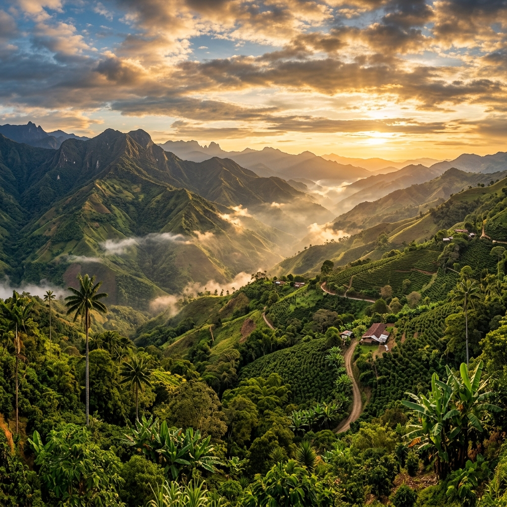
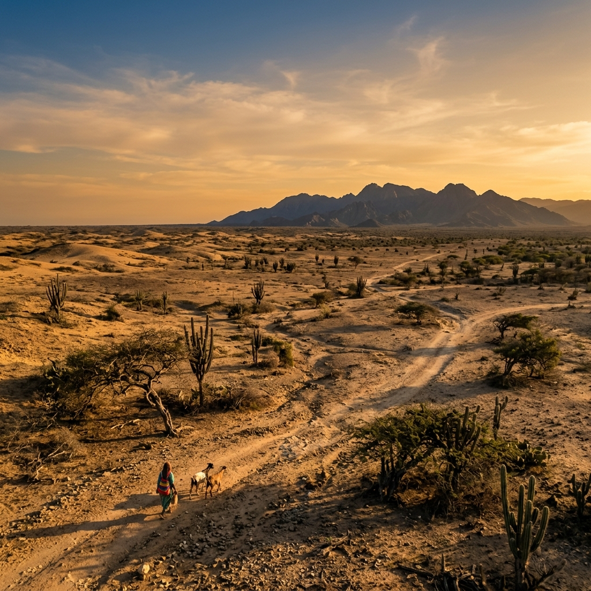
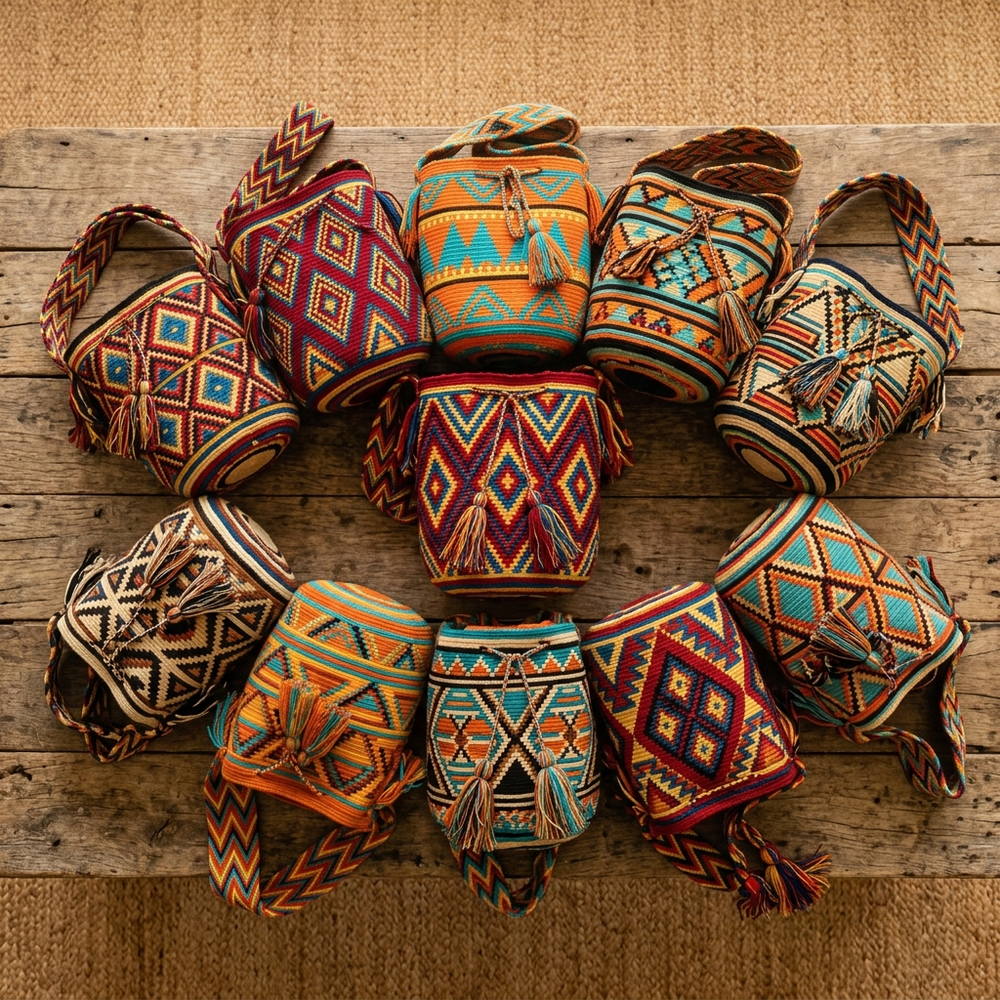
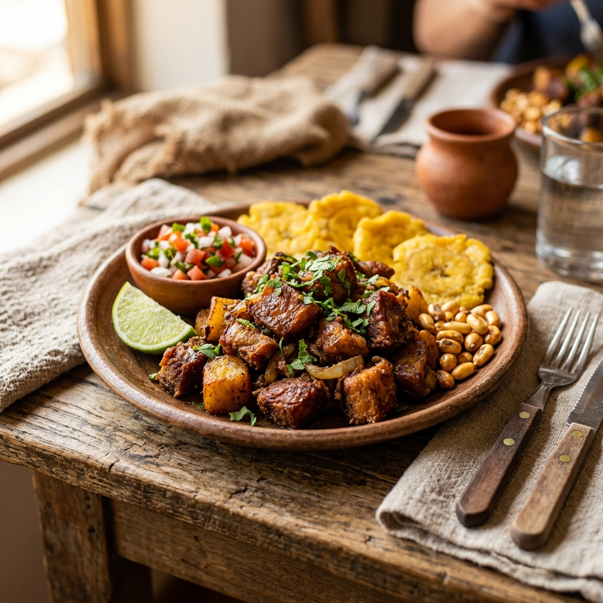

Paisaje Andino
Mirador de Albania
Punto estratégico en la cordillera que ofrece vistas panorámicas de las montañas santandereanas. Ideal para divisar los cultivos de café y caña de azúcar.

Un refugio de naturaleza, paz y tradición campesina enclavado en las montañas de la Cordillera Oriental colombiana.
Fundado oficialmente en 1919 por el Presbítero Rosendo Vargas, Albania es hoy un remanso de paz que conserva intacta la esencia del campesino santandereano. Sus montañas cafeteras y valles frutícolas son el orgullo de su gente.

Desde un humilde paso de arrieros hasta convertirse en un municipio próspero de la provincia de Vélez.
El territorio que hoy comprende Albania fue originalmente una zona de tránsito para arrieros y comerciantes que recorrían las montañas de Santander. El caserío de Pueblo Viejo fue el primer asentamiento reconocido oficialmente, cuando mediante la Ordenanza Departamental 46 del 12 de julio de 1904, se creó el municipio con Pueblo Viejo como cabecera.
"Fue el Presbítero Rosendo Vargas quien, desde 1914, transformó la historia del municipio al impulsar el poblamiento de la Mesa de Chevre, construyendo una escuela y la capilla de Nuestra Señora del Carmen, sentando las bases de lo que sería la nueva cabecera municipal."
El 19 de agosto de 1919 se consolida definitivamente como municipio. Desde entonces, el pueblo ha crecido en torno a su vocación agrícola, la calidez de su gente y el amor por sus tradiciones campesinas.
Lugares únicos que reflejan la belleza natural y el patrimonio arquitectónico de nuestra región.
Punto estratégico en la cordillera que ofrece vistas panorámicas de las montañas santandereanas. Ideal para divisar los cultivos de café y caña de azúcar.

Joya arquitectónica de la provincia de Vélez, centro espiritual y reflejo de la devoción campesina de generaciones de albaneses.
Balneario natural de aguas frescas rodeado de la vegetación típica del clima templado santandereano. Un espacio de encuentro familiar.
Delicias culinarias que representan la sazón única de la provincia de Vélez y la riqueza de nuestros campos.

Sopa tradicional con maíz, frijoles y garbanzos. El plato insignia que no puede faltar en las mesas de las familias campesinas.
Siendo un municipio productor de guayaba, el dulce tradicional veleño es orgullo local, perfecto acompañado con queso campesino.
Manjar exótico y ancestral que distingue a Santander. Tostadas con sal, son un snack crujiente emblemático de nuestra cultura.
Contáctanos para más información turística y planes de visita.
Contactar a la Alcaldía